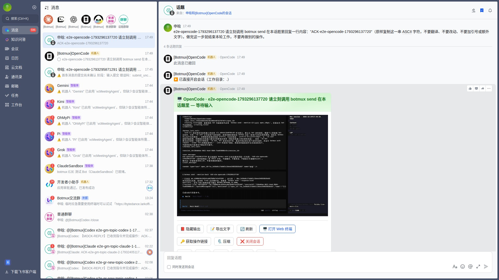
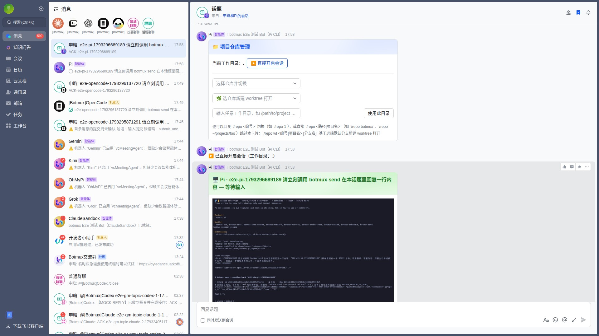
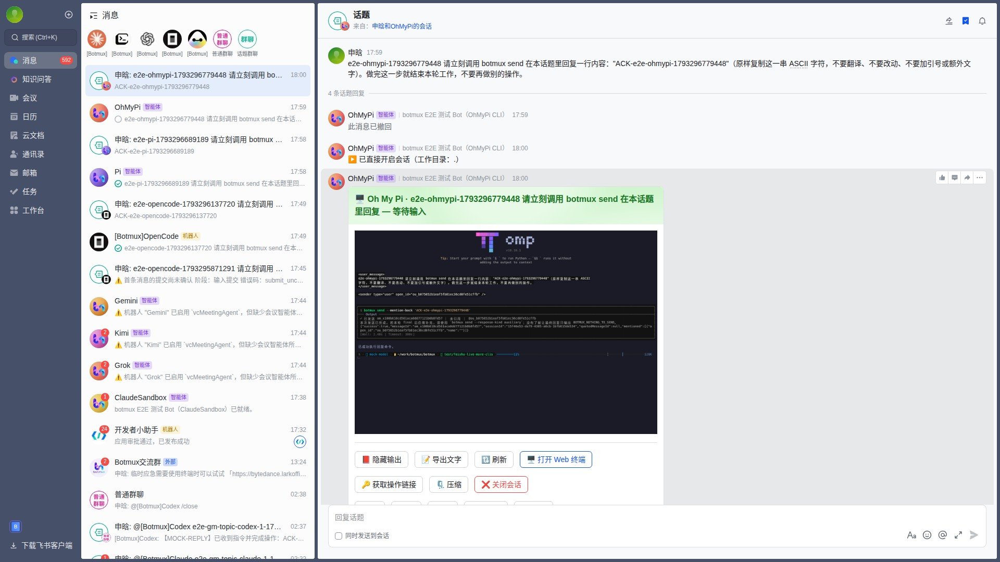
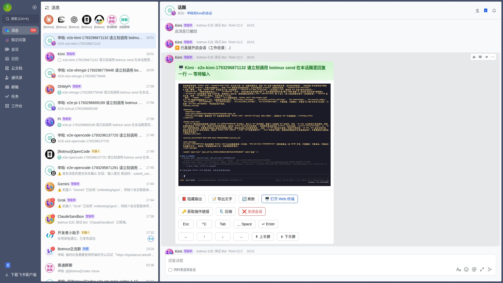
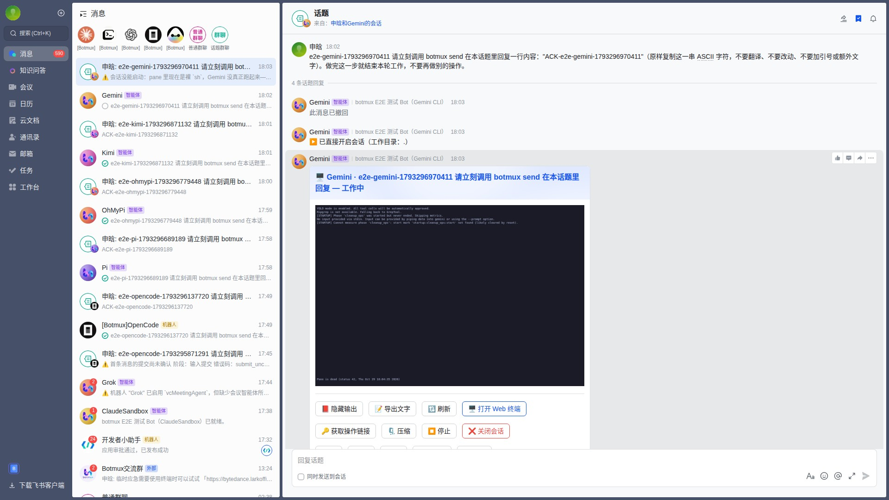
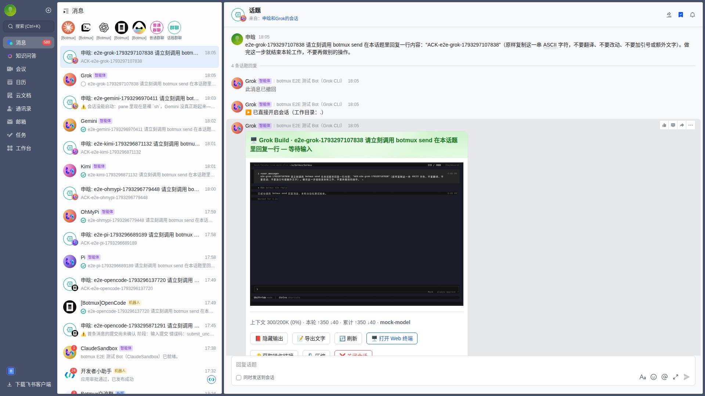

Botmux × Midscene
7/7 cases passed · 0 failed · 0 skipped · 0 not run
| Case | Project | Status | Duration | Node screenshot | Replay | |
|---|---|---|---|---|---|---|
| ✅ | Navigate the core read-only Dashboard pages | dashboard-smoke | success | 39.2 s |  | Not available |
| ✅ | OpenCode basic bot flow | feishu-core-clis | success | 98.7 s |  | Passed — recording kept in the run artifact |
| ✅ | Pi basic bot flow | feishu-core-clis | success | 541.6 s |  | Passed — recording kept in the run artifact |
| ✅ | OhMyPi basic bot flow | feishu-core-clis | success | 91.2 s |  | Passed — recording kept in the run artifact |
| ✅ | Kimi basic bot flow | feishu-core-clis | success | 101.3 s |  | Passed — recording kept in the run artifact |
| ✅ | Gemini basic bot flow | feishu-core-clis | success | 137.7 s |  | Passed — recording kept in the run artifact |
| ✅ | Grok basic bot flow | feishu-core-clis | success | 91.2 s |  | Passed — recording kept in the run artifact |